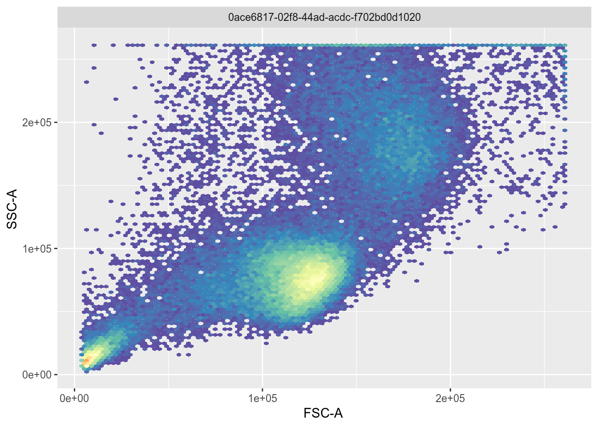
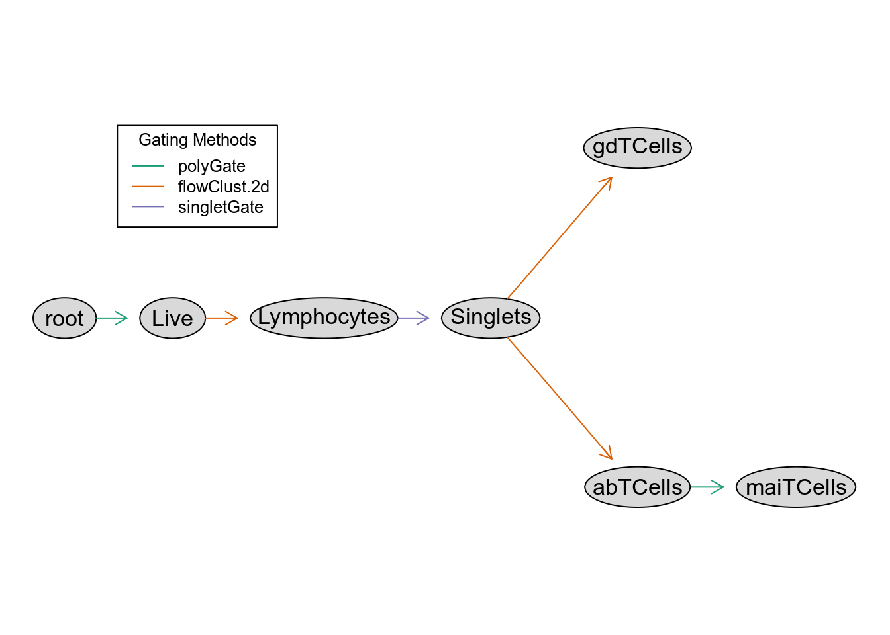
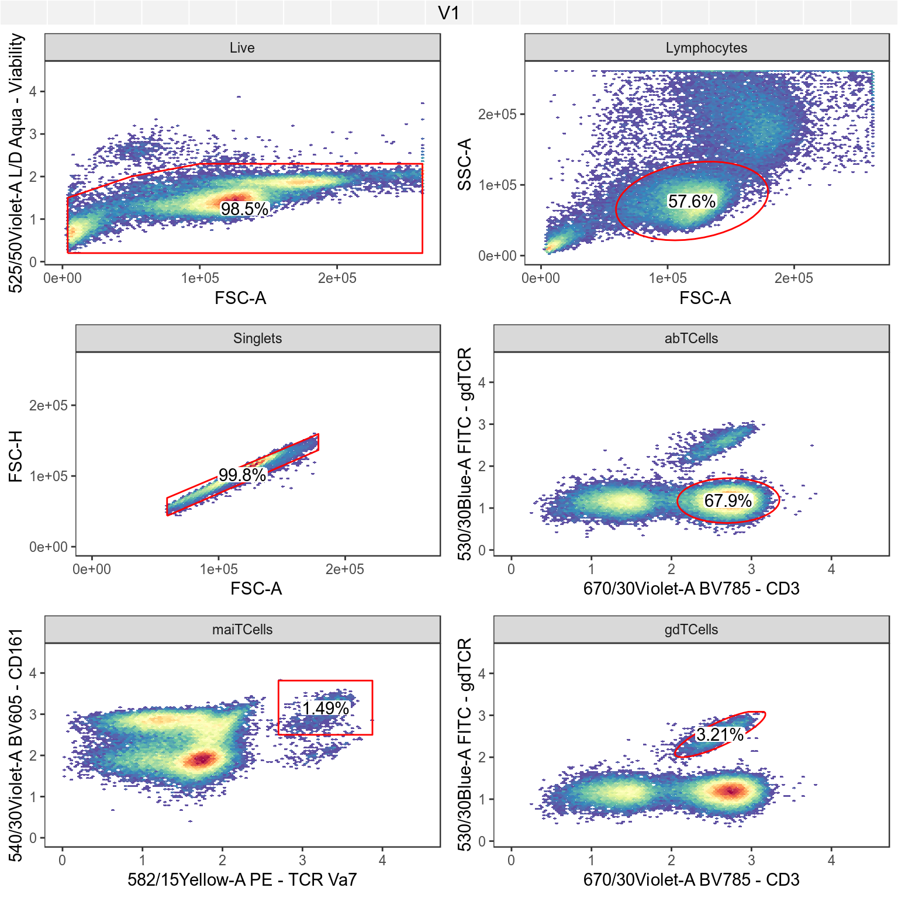

Chapter 2 Flow
# Bioconductor
library(FlowRepositoryR)
library(flowCore)
library(openCyto)
library(ggcyto)
# Tidyverse
library(fs)
library(tidyverse)We’ll examine the OMIP panel data available from FlowRepository, using the client library FlowRepositoryR, and demonstrate phenotypic differences between T cell types based on the protein expression levels captured in these assays.
To aid in identifying and visualizing these different cell populations, a variety of tools built on flowCore will be used and in particular, openCyto will enable us to model and manipulate the workflows used in the OMIP publications to identify T cell types.
2.1 Exploring FlowRepository
TBD
- Attempt to show consolidated metadata from all OMIP datasets
- This will likely need to involve downloading the data to demonstrate anything useful (i.e. which markers are present)
- Show markers available by datasets relating to Human t-cells (not sure how to filter to human only yet)
2.2 Data from one paper
Initial Example: OMIP-021 Innate-like T-cell Panel (FR-FCM-ZZ9H)
data_dir <- dir_create("data/flow")
dataset_id <- "FR-FCM-ZZ9H"
dataset_path <- fs::path(data_dir, dataset_id)
dataset <- flowRep.get(dataset_id)
if (!dir_exists(dataset_path))
dataset <- download(dataset, dirpath=dataset_path, only.files="Donor.*fcs", show.progress=F)
fr <- read.FCS(fs::path(getwd(), dataset_path, 'Donor1.fcs'))
fr %>% exprs %>% data.frame %>% head(10) %>% knitr::kable(format.args = list(digits=3))| FSC.A | FSC.H | SSC.A | SSC.H | X450.50Violet.A | X525.50Violet.A | X540.30Violet.A | X585.15Violet.A | X610.20Violet.A | X670.30Violet.A | X670.14Red.A | X730..45Red.A | X780.60Red.A | X530.30Blue.A | X710.50Blue.A | X582.15Yellow.A | X610.20Yellow.A | X670.30Yellow.A | X710.50Yellow.A | X780.60Yellow.A | Time |
|---|---|---|---|---|---|---|---|---|---|---|---|---|---|---|---|---|---|---|---|---|
| 119565 | 108322 | 82937 | 76142 | 1130 | 257 | 630 | 1002 | 3625 | 5465 | 7061 | 13215 | 6966 | 222.4 | 17786 | 803 | 418 | 20700 | 29263 | 19368 | 136 |
| 107004 | 77596 | 262143 | 207144 | 1223 | 732 | 995 | 169 | 721 | 114 | 1110 | 8055 | 2695 | 420.8 | 926 | 358 | 294 | 851 | 70563 | 2586 | 136 |
| 214908 | 139281 | 262143 | 226353 | 3218 | 1049 | 2240 | 1467 | 7903 | 10092 | 8914 | 26039 | 10930 | 561.1 | 19171 | 994 | 733 | 21668 | 88813 | 12031 | 136 |
| 119453 | 107496 | 67842 | 62072 | 2473 | 351 | 5828 | 14664 | 22003 | 3548 | 7316 | 6115 | 951 | 112.0 | 5504 | 184 | 448 | 4450 | 17505 | 1143 | 136 |
| 122345 | 111352 | 62728 | 56540 | 541 | 194 | 2601 | 735 | 1267 | 1095 | 3060 | 4466 | 4531 | 95.4 | 5793 | 435 | 440 | 8354 | 16969 | 3564 | 137 |
| 137030 | 124521 | 77133 | 70557 | 4062 | 471 | 10052 | 23228 | 41648 | 6317 | 13904 | 15326 | 2217 | 152.7 | 5801 | 189 | 829 | 10039 | 21626 | 2003 | 138 |
| 153801 | 122139 | 122174 | 80251 | 924 | 735 | 2110 | 1059 | 2827 | 2641 | 287 | 1277 | 611 | 4595.7 | 6182 | 175 | 201 | 822 | 33043 | 1301 | 138 |
| 177071 | 145150 | 168704 | 148426 | 731 | 679 | 1243 | 337 | 1045 | 201 | 415 | 9995 | 1659 | 291.3 | 1052 | 271 | 366 | 570 | 47515 | 953 | 138 |
| 165853 | 118245 | 122113 | 89253 | 2785 | 511 | 7996 | 2560 | 15636 | 9627 | 10654 | 29089 | 14198 | 337.8 | 20733 | 1203 | 2341 | 24269 | 40187 | 12859 | 138 |
| 121005 | 108937 | 72537 | 66157 | 255 | 205 | 3215 | 724 | 2316 | 153 | 361 | 829 | 141 | 166.0 | 4320 | 335 | 819 | 1027 | 21945 | 244 | 138 |
In this dataset, one way to identify lymphocytes is by looking at modes in the relationship between side and forward scatter:
ggcyto(fr, aes(x='FSC-A', y='SSC-A')) + geom_hex(bins=100)
To identify the lymphocyte cells above, openCyto gating can be used to select the largest cluster of cells automatically and visualize what fraction of the population these cells constitute:
gate <- openCyto::flowClust.2d(fr, 'FSC-A', 'SSC-A', K=3, quantile=.9)
ggcyto(fr, aes(x='FSC-A', y='SSC-A')) + geom_hex(bins=100) + geom_gate(gate) + geom_stats()
2.2.1 Gating
By repeating the above process for all cell types of interest in the paper, the workflow can be reproduced via a GatingTemplate as shown below, which could also be built programmatically instead. The graphical representation of the template shows how cell types will be recursively defined based on 2 dimensional filters:
template <- 'alias,pop,parent,dims,gating_method,gating_args,collapseDataForGating,groupBy,preprocessing_method,preprocessing_args
Live,+,root,"FSC-A,525/50Violet-A","polyGate","x=c(0,3e5,3e5,1e5,.5e5,0),y=c(0,0,2.3,2.3,2,1.5)",,,,
Lymphocytes,+,Live,"FSC-A,SSC-A","flowClust.2d","K=3,quantile=.95",,,,
Singlets,+,Lymphocytes,"FSC-A,FSC-H","singletGate","maxit=1000,wider_gate=T,prediction_level=.999999999",,,,
gdTCells,+,Singlets,"670/30Violet-A,530/30Blue.A","flowClust.2d","K=3,target=c(2.5,2.5)",,,,
abTCells,+,Singlets,"670/30Violet-A,530/30Blue.A","flowClust.2d","K=3,target=c(2.5,1),quantile=0.95",,,,
maiTCells,+,abTCells,"582/15Yellow.A,540/30Violet.A","polyGate","x=c(2.7,5,5,2.7),y=c(2.5,2.5,5,5)",,,,'
template_path <- file_temp(ext='.csv')
write_lines(template, template_path)
gt <- gatingTemplate(template_path)
plot(gt)
The above template only outlines the gating workflow but to apply it to our data, these are the common steps:
- Apply compensation to the raw FCS data if necessary (not necessary in this case as the authors did this beforehand)
- Define channel transformations to make gating and visualization possible
- Define any custom gating functions needed in the workflow, which is particularly useful for setting manual gates
- Apply the gating template to the data at hand, which in this case is represented as a
flowFramebut could also be aflowSetrepresenting a collection of experiments
Here is the realization of these steps for this data specifically:
# Define logical transformation for all fluorescent channels and build a "GatingSet", which is a wrapper
# class that binds numeric data with transformations and gating information
transformer <- transformerList(colnames(fr@description$SPILL), logicle_trans())
gs <- transform(GatingSet(flowSet(fr)), transformer)
# Define a custom polygon gating function, that is used in our template to deal with situations
# that are difficult to define an automated gate for
.polyGate <- function(fr, pp_res, channels, filterId="polygate", ...){
args <- list(...)
g <- data.frame(x=args$x, y=args$y)
colnames(g) <- channels
flowCore::polygonGate(.gate=g, filterId=filterId)
}
registerPlugins(fun=.polyGate, methodName='polyGate',dep=NA)
# Apply the gating to the data (this may take a couple minutes)
gating(gt, gs)2.2.2 Results
Now that the workflow is finished, here is a look at all cell types identified:
autoplot(gs[[1]], strip.text = "gate", bins=100, merge=F, axis_inverse_trans=F) + flow_theme
This should then be comparable to what was in the OMIP-021 publication, and here are relevant figures demonstrating the similarity of the cell subsets captured:
optional caption text